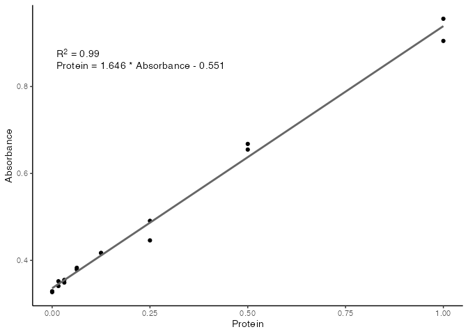
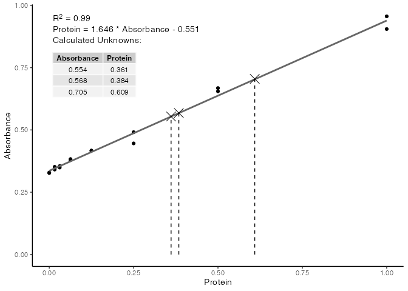

The goal of standard is to …
Installation
Currently no published on CRAN, but install from GitHub with the following:
remotes::install_github("rforbiochemists/standard")Example
This is a basic example which shows you how to solve a common problem:
library(standard)
# Protein Concentrations
prot <- c(0.000, 0.016, 0.031, 0.063, 0.125, 0.250, 0.500, 1.000,
0.000, 0.016, 0.031, 0.063, 0.125, 0.250, 0.500, 1.000)
# Absorbance from my protein assay
abs <- c(0.329, 0.352, 0.349, 0.379, 0.417, 0.491, 0.668, 0.956,
0.327, 0.341, 0.355, 0.383, 0.417, 0.446, 0.655, 0.905)
data <- data.frame(
Protein = prot,
Absorbance = abs
)
unknowns <- c(0.554, 0.568, 0.705)
mod <- data %>%
std_curve_fit(Protein, Absorbance)
plot(mod)
std_curve_predict(mod, unknowns) %>%
plot()